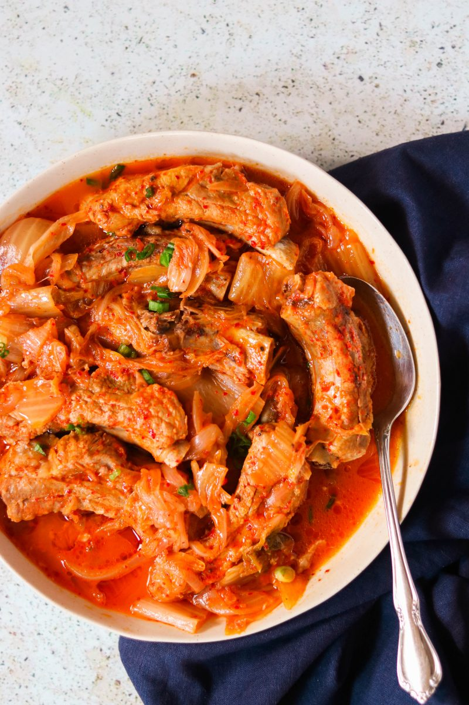

Kimchi Kalbi(Ribs)

A heavenly combination of kimchi and meat
Kimchi, the traditional Korean side dish of salted and seasoned fermented vegetables,
has become a favorite around the world with its variety and taste.
By using kimchi to season galbi, a traditional Korean type of ribs, we can create a
wonderful dish full of exotic flavors with crunch and sizzle.
Ingredients
- 2 lbs pork ribs
- 1 large onion sliced
- 4 cup kimchi well-fermented and sour, including the juice
- 2 cup water
- 1 green onion chopped
Steps
- Fill a heavy-bottomed pot or a Dutch oven two-thirds full of water. Heat over medium-high
heat until it comes to a boil. Add the pork ribs. Reduce the heat to medium-low, cover and let
simmer for 30 minutes. Drain the ribs and set aside. Discard the water.
- Add the onion slices to the bottom of the same pot. Place the pork ribs on top of the onion
slices. Then add the kimchi on top of the pork. Add enough water to cover the onion and the pork,
but not the kimchi. Cover and bring to a boil over medium-high heat. Reduce the heat to low and
let it simmer for 30 minutes. Check every 10 minutes, and add more water if needed.
- Once the pork is tender, remove it from the heat. Transfer it to a large serving bowl and
sprinkle with chopped green onion. Serve with sticky rice of choice.